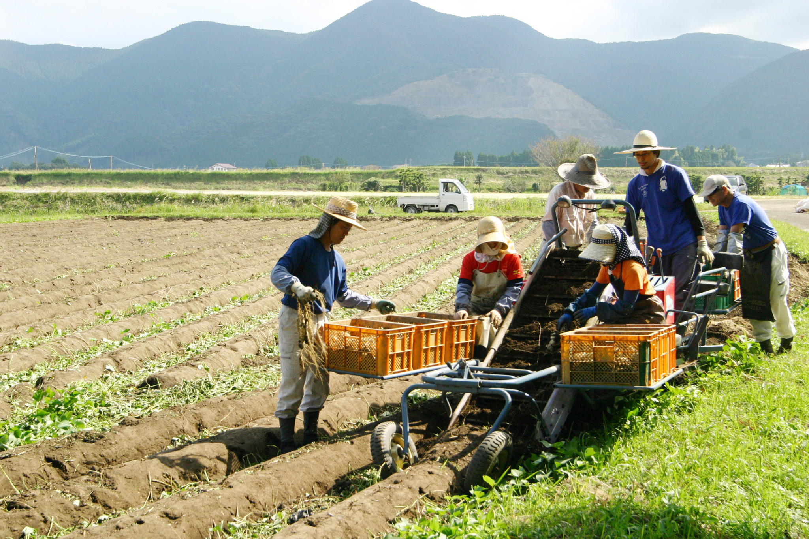

Our shochu-making is the essence of agriculture itself.


- 


Watanabe Distillery is a shochu distillery in Miyazaki City, Miyazaki Prefecture where only
skilled workers perform all the steps of creating shochu from cultivating the sweet
potatoes which are the raw ingredient to distilling and bottling.


| CEO | Koichiro Watanabe |
|---|---|
| Address | 2032-1 Tano-cho-Ko Miyazaki City MIyazaki Prefecture 889-1701,Japan |
| TEL | +81 985-86-0014 |
| FAX | +81 985-86-0504 |
Copyright (C) 2015 Watanabe Distillery Co.,Ltd. All right reserved.